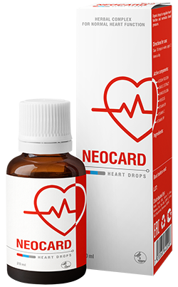

Dopo una tale pulizia dei vasi sanguigni, la pressione alta ed altre 9 malattie ritenute “incurabili” scompaiono
TUTTI SANNO CHE LA PRESSIONE ALTA, L’ICTUS E L’INFARTO SONO UNA CONSEGUENZA DEI VASI SANGUIGNI “CONTAMINATI” DAL COLESTEROLO. IN OGNI CASO, POCHE PERSONE SANNO CHE È SOLO LA PUNTA DELL’ICEBERG. I VASI SANGUIGNI “SPORCHI” SONO I RESPONSABILI DI 9 SU 10 MALATTIE CRONICHE CHE SONO RITENUTE INCURABILI
Mal di testa, sbalzi di pressione, le articolazioni che fanno male e scricchiolano, il collo che non gira e la schiena che non si piega. La sera le gambe sono gonfie, di mattina invece è la faccia ad essere gonfia. C’è un campanello che suona nelle orecchie. Le dita si intorpidiscono e gli arti diventano più freddi. La vista e la memoria peggiorano. Molti dicono che è per l’età ma non è così

Paolo Rossetti è il famoso esperto di cardiologia
Paolo
Rossetti sa come spiegare
i procedimenti medici complessi in parole semplici. Ha scritto 55 libri e guide
di studio per persone senza formazione medica. È assolutamente convinto che i nostri vasi sanguigni siano
responsabili per il 90% della salute del nostro corpo e che il nostro benessere dipenda dalla loro
pulizia.
Perché dai vasi sanguigni dipende il 90% della salute?
Lei dice sempre che i vasi sanguigni rappresentano il 90%
della salute del corpo? Perché?
Qual è il più grande organo nel corpo umano? Poche persone
lo
sanno. Persino gli studenti di medicina spesso si sbagliano. Più spesso si dice il cervello o il fegato. I
più
eruditi dicono la pelle. Ma invece, il più grande organo è il nostro sistema vascolare.
Immagina. Se districhiamo tutti i vasi sanguigni del corpo umano e li uniamo in un solo lungo filo, allora la lunghezza di questo filo sarà di circa 100.000 chilometri.
Per essere più chiari - la lunghezza dell’equatore della Terra è di 40 000
chilometri. Pare che il “filo” dei vasi sanguigni di una sola persona possa circondare il pianeta
2.5 volte
Ti piace questa proporzione?
I vasi sanguigni non sono solo i canali attraverso cui
scorre
il sangue. Si tratta di un organo unico e complesso, in cui, se c’è un problema, immediatamente viene fuori
il
dolore e diverse malattie:
Cattiva circolazione sanguigna alle gambe – vene
varicose, edema
persistente e costante pesantezza alle gambe, freddezza o viceversa - un’insopportabile sensazione di
bruciore ai piedi. Crepe sui talloni. Non c’è protezione contro i batteri, e
quindi i funghi. Le unghie diventano ruvide;
I vasi sanguigni ostruiti che
nutrono il fegato – epatite. Sapore amaro in bocca. Hai mangiato grassi - hai un gusto
amaro;
I vasi sanguigni deboli e dilatati nelle articolazioni
– le
cartilagini si prosciugano. Le articolazioni scricchiolano e fanno male, si sviluppano l’osteocondrosi e
le
ernie;
I vasi sanguigni del retto hanno perso la loro tonalità
- le
emorroidi con i coni viola;
I vasi oculari – la vista
cala, diventa ondulata. Si sviluppa la cataratta. Il rossore agli occhi, che spesso
attribuiamo alla stanchezza, è in realtà una microemorragia - lacrime dei capillari oculari più
piccoli;
La circolazione cerebrale è peggiorata – arrivano i
capogiri, l’acufene e le dimenticanze. Sarà successo anche a te di arrivare in cucina e di dimenticare
subito
perché sei arrivato? O di avere una parola di uso comune sulla punta della lingua, senza poterla
ricordare? Sono tutti i segni di un deterioramento dello stato dei vasi sanguigni del cervello;
E ovviamente, la regina della cattiva circolazione, è la pressione alta. L'ipertensione è la madre d'ictus e la sorella d'infarto
I vasi sanguigni nutrono il nostro sistema, la vita stessa circola attraverso questi vasi.
Se
si blocca un’importante sezione sulla strada, la vita si ferma.
I vasi sanguigni
"ostruiti" - la carestia per tutti gli organi.
L’eccesso di peso
è strettamente connesso ai vasi sanguigni. I vasi ostruiti dal colesterolo mettono gli
organi a digiuno, i vasi sanguigni non possono portare le corrette quantità di nutrienti agli altri organi.
Per
questo, il cervello manda dei segnali - devi mangiare. E l’uomo mangia. Ma agli organi manca comunque il
nutrimento a causa dei vasi sporchi. Il cervello manda nuovamente il segnale - devi mangiare. E quindi siamo
in
un circolo vizioso.
E da qui la voglia costante di masticare qualcosa, la voglia incredibile
di cibi dolci e grassi - il corpo vuole calorie.
Quando i medici dicono ai pazienti"Lei
ha l’ipertensione a causa del sovrappeso", confondono la causa e l’effetto. Non è l'ipertensione che è
causata dal sovrappeso. E il sovrappeso che è causato dall’ipertensione.
Si dice che “È impossibile essere felici se non c’è la salute”. Questa frase può essere completata “E la salute è impossibile senza avere i vasi sanguigni puliti”
Ecco perché non mi stancherò mai di ripetere: se vuoi vivere una vita piena - pulisci e cura i vasi. I vasi sanguigni puliti sono la chiave per sbarazzarsi del 90% delle malattie croniche, alcune delle quali sono considerate "incurabili".
Da cos’altro sono inquinati i vasi sanguigni oltre che dal colesterolo?
Tutti sappiamo che il colesterolo è il male. Proprio questo blocca i nostri vasi sanguigni, restringe il flusso e interrompe la circolazione del sangue. Ma è l'unico colpevole?
COLESTEROLO
Si, hai ragione. Le placche di colesterolo, che sono anche chiamate “placche
aterosclerotiche,” sono responsabili di circa il 65-70% dell’inquinamento vascolare.
In 50 anni nei
vasi sanguigni umani si accumulano fino a 5 kg di placche di colesterolo. I depositi
di colesterolo restringono il lume vascolare di 4-5 volte.
Immagina. Se il lume normale del vaso è come il tuo dito, allora 5 kg di placche di colesterolo riducono il lume fino a 4 mm.
Le placche di colesterolo da sole non sono la minaccia per la vita. Certo, la qualità della vita peggiora, aumentano la pressione sanguigna, le emicranie e i dolori articolari, così come la stanchezza e l’apatia. I trombi, che pure si accumulano nei vasi, è molto più pericolosi.
TROMBI
I trombi si accumulano in modo significativo per “soli” 800 g - 1 kg. Ma il
vero pericolo è che sono instabili. In ogni momento, un trombo può staccarsi e viaggiare attraverso i
vasi sanguigni in cerca di una vittima.
Se il trombo è abbastanza largo, allora chiude strettamente
il
vaso vittima. Si sviluppa l’ischemia - una cessazione completa dell’afflusso di sangue verso l’organo che si
nutre
grazie a questo vaso.
L’ictus ischemico - un blocco del vaso del cervello. L’infarto - un blocco
dell’arteria cardiaca. Ischemia del fegato, collasso del polmone, insufficienza renale. Le emorroidi non
sono
altro che un’ischemia dei vasi del retto. Persino il blocco dei piccoli vasi delle gambe con l'andar del
tempo porta alla
necrosi - cancrena.
FOSFATO DI CALCIO
Il calcare nei vasi è il residuo dei medicinali chimici e degli additivi alimentari. Si
accumulano di 300-400 grammi fino ai 50 anni. La maggior parte del calcare si accumula
nei vasi del cervello.
Il pericolo del fosfato di calcio è che ha una struttura affilata e
cristallina.
Con un forte restringimento - uno spasmo del vaso causato dallo stress o dall’esercizio fisico o dal tempo,
un
cristallo tagliente di calcio può perforare il vaso e causarne la rottura. E una rottura di un vaso
cerebrale
significa un ictus emorragico.
4 segni chiari e 7 sintomi nascosti di una scarsa circolazione sanguigna
Quali sono i sintomi che indicano che i miei vasi sono ostruiti dalla “sporcizia”?
Come
capire che il corpo ci sta gridando, "Pulisci presto i vasi
sanguigni!"
Francamente, se hai più di 45 anni e non hai mai preso dei nutraceutici per
pulire i tuoi vasi sanguigni, ti garantisco che hai qualche problema con i vasi.
L’ostruzione vascolare con il colesterolo, i trombi, la calcificazione è
essenzialmente un processo naturale dell’invecchiamento. Certo, il cibo moderno, le medicine, il fumo e
l’alcool
accelerano questo processo “letteralmente” di 5-8 volte. Ma siamo tutti esseri umani e non si può girarci
attorno nel mondo in cui viviamo.
I sintomi principali dei vasi sporchi
Se
hai una diagnosi di ipertensione - allora puoi anche non ascoltare. L’ipertensione è la regina della cattiva
circolazione sanguigna.
Soffri di sbalzi di pressione? La pressione è costantemente alta e sei
costretto
a prendere le medicine? Quindi, solo il 30% dei vasi sanguigni è ancora pulito. Il resto è
densamente coperto dalle placche di colesterolo, dai trombi e dal calcare.
Ecco perché il
minimo stress, il cambiamento del tempo, le tempeste magnetiche influiscono immediatamente sul benessere di
una
persona. La pressione aumenta, la testa e le articolazioni cominciano a farti male.
Quattro
malattie causate da una cattiva circolazione sanguigna:
- 1. Ipertensione
La pressione instabile o costantemente alta, che deve essere abbassata con medicinali è l’indicatore più importante. C’è una diagnosi di ipertensione? In questo caso i vasi ti semplicemente gridano "Puliscici!" - 2. Vene varicose
Le brutte vene sporgenti sulle gambe, pesantezza, dolore e gonfiore. Il colesterolo e i trombi fanno “inceppare” le valvole venose. Appaiono gradualmente le “stelle” vascolari, che si trasformano poi in una “rete” vascolare. E la rete si sta già sviluppando a tutti gli effetti in vene varicose. - 3. Emorroidi
Quando i vasi del retto che drenano il sangue si ostruiscono, i noduli emorroidali si gonfiano. Se i vasi che forniscono il sangue sono i primi ad ostruirsi, si creano le ragadi anali. - 4. Osteocondrosi
C’è la mancanza di circolazione nelle cartilagini. Le cartilagini si induriscono e cominciano ad usurarsi, dato che non hanno il tempo per ripristinarsi. Si seccano. Perdono la capacità di ammortizzare delicatamente. I sali non vengono eliminati e cominciano a crescere senza controllo, creando una gobba.
7 sintomi nascosti:
- 1. Edema
I vasi sporchi non hanno tempo di pompare il liquido. Il metabolismo elettrolitico viene disturbato. Di sera le gambe si gonfiano tanto, i calzini premano le caviglie, lasciando i segni. È impossibile sfilare gli anelli dalle dita. L'addome gonfio parla di edema degli organi interni.
- 2. Acufene
Da un cigolio difficilmente udibile fino ad un rumore alto che interferisce con la concentrazione. È la conseguenza di un aumento della tensione dei vasi del cervello che crea la pressione sul timpano.
- 3. Vertigine
La sensazione di essere ubriachi, improvvisi capogiri indicano che il tuo apparato vestibolare “muore di fame”. Spesso soffre anche l’udito.
- 4. Insonnia
Ti senti stanco e assonnato, e poi vai a letto a mezzanotte e non riesci a dormire? Questo è causato da una mancanza di afflusso sanguigno alla ghiandola pituitaria. Essa cessa di produrre la melatonina - l’ormone del sonno.
- 5. Affaticamento
Non hai assolutamente le forze, non vuoi fare nulla. Vuoi solo dormire e mangiare. Questa sensazione peggiora a causa del fatto che il corpo va in modalità risparmio di energie. Gli organi non ricevono i nutrienti necessari a causa dei vasi sporchi e per non morire il tuo corpo mira a ridurre al minimo le attività.
- 6. Anomalie visive
Le "mosche" davanti agli occhi, le onde, l’offuscamento e la foschia sono i sintomi della scarsa circolazione sanguigna negli occhi.
- 7. Dolori articolari
Le articolazioni ti fanno male quando il tempo cambia. Quando ti svegli la mattina non ti senti sveglio e riposato, ma intorpidito come una persona disabile semiparalizzata. Ci vuole un po’ per iniziare a camminare e sgranchirsi le gambe che sono rigide dopo il sonno. Si perdono le proprietà del liquido sinoviale, le articolazioni sono incollate tra di loro come una pasta.
C’è almeno un sintomo? I vasi stanno disperatamente suonando l’allarme, chiedendo la pulizia e la nutrizione.
Più spesso le persone hanno i numerosi sintomi in varie combinazioni. E poi tutti nello stesso momento.
Le persone sfortunate provano a curare ogni malattia individualmente. Le pasticche per la
pressione, gli unguenti per le vene varicose, le supposte per le emorroidi, il gel per l’osteocondrosi. E
ovviamente
antidolorifici, antidolorifici, antidolorifici.
Stanno semplicemente buttando i soldi al vento.
Perché la
causa di tutte queste malattie è la stessa - l’ostruzione vascolare. Ed è necessario iniziare da qui, con la
pulizia generale dei vasi.
Come pulire i vasi sanguigni dal colesterolo, dai trombi e dal calcare?
Diamo un consiglio specifico con il caso di Emilia Colli da Ragusa. 57 anni,
sposata, sovrappeso, ipertensione e vene varicose. Reagisce al tempo con la precisione di un barometro -
i dolori articolari, la stanchezza e la sonnolenza, il mal di testa.
Come aiutare
Emilia Colli? Come pulire i suoi vasi senza dover andare ai medici e ascoltare le frasi
moraliste come "Dovresti perdere peso", "Dovresti fare sport", “Dovresti mangiare bene”,
"È una questione di età" e così via?
La maggior parte dei prodotti farmaceutici non curano né guariscono, ma rovinano e paralizzano
Si, purtroppo la medicina nelle nostre regioni zoppica su tutte e due le gambe. Per questo,
capisco assolutamente la riluttanza ad andare dal medico. Ma Emilia Colli starà bene anche da sola.
Per
una
pulizia sicura dei vasi sanguigni posso parlare di un solo rimedio dalla reputazione impeccabile -
. Allunga la vita di 11-17 anni, riempiendola di energia e agilità, e non a costo di un
tormento e perdendo ogni vitalità.
Sicuro come una tisana. Ed è secondo per
efficacia
superato solo dalla pulizia chirurgica dei vasi sanguigni. Ma diversamente dalla chirurgia, non ha le
complicazioni o gli
effetti collaterali. Il prodotto pulisce tutti i vasi del corpo. Dalle grandi arterie spesse fino ai più
piccoli
capillari.
Le gocce di sono al 100% preparate dagli estratti di piante. Questi bei
pulitori spazzano via il muco del
colesterolo dai vasi, i trombi dalle pareti, le placche di calcio, i
residui dei medicinali. Tutto quello che interferisce con il flusso libero del sangue.
Lo sporco che
si
è accumulato negli anni, imprigionando la tua vita, viene lavato via grazie ad un'assunzione regolare delle
gocce di in giro di 1 mese.
In un mese scioglie e rimuove 4 kg di placche di colesterolo. Dissolve 900 g - 1 kg di trombi e filtra 350-400 gr di calcare
I mal di testa scompare, l’acufene sparisce. Il cervello, ricevendo il giusto nutrimento
grazie ai vasi puliti, lavora alla velocità di un supercomputer. I pensieri sono chiari e
precisi.
Le sensazioni sono acute, senti i suoni piacevoli, di cui prima non poteva
godere. L’udito migliora, puoi addirittura distinguere una conversazione tranquilla nella stanza
vicina.
Gli odori hanno i nuovi colori. La congestione nasale, il naso che cola
cronicamente, le allergie vanno via. I bronchi si allargano. La respirazione è costante e libera. L’aria
fresca,
che riempie i polmoni, si diffonde nel corpo con onde piacevoli, causando una sensazione di leggera
euforia.
I sapori diventano pieni. Il cibo abituale dà un piacere inabituale.
Mangi meno e meglio. Scompare quella voglia improvvisa di grassi e zuccheri
Le articolazioni
cantano “grazie” all’unisono, non avendo più dolore. Lo scricchiolio scompare completamente, al
suo
posto ci sono i movimenti lenti, grazie al miglioramento della lubrificazione delle articolazioni. È come un
motore a cui viene cambiato l’olio, il liquido nero e lo sporco di metalli viene sostituito con l'olio nuovo
e
chiaro, che permette uno scivolamento perfetto.
Impressionante. Sinceramente, è la prima
volta
che sento parlare del .
La nostra Emilia Colli, dopo aver probabilmente
provato
centinaia di diversi mezzi e medicine, ha deciso di darci un taglio con tutto questo e ha promesso di
non buttare più
soldi in soluzioni miracolose.
Lasciatemi raccontare una storia istruttiva sulla
diffidenza.
In un mese scioglie e rimuove 4 kg di placche di colesterolo. Dissolve 900 g - 1 kg di trombi e filtra 350-400 g di calcare
Nel 1929, fu inventato il primo antibiotico, la penicillina, che curava
facilmente la dissenteria e il tifo, di cui al tempo le persone morivano inevitabilmente.
Ma la
maggior
parte della gente non credeva che l’antibiotico potesse aiutare, perché avevano già fatto 1.000 vani
tentativi
per guarire. Quelli che erano stati delusi 1000 volte e che non ebbero paura di provare per la 1001esima
volta
furono curati. E quelli che si arresero, che fecero ciao ciao con la mano dicendo questa frase "Un altro
rimedio miracolo che non farà nulla", morirono, mentre la salvezza era proprio lì di fronte a loro
La penicillina sconfisse contemporaneamente le malattie prevalenti a quel tempo:
dissenteria,
tifo, e peste polmonare. Quindi, magari con l'andar degli anni eliminerà del tutto le
malattie vascolari. I primi
passi sono già stati intrapresi - Giappone, Canada, Corea, Svizzera ed Israele - hanno sistemato
legislativamente la pulizia dei vasi sanguigni con prodotti naturali.
In Italia, viene
prescritto ufficialmente solo in un posto - nell’ospedale di Roma. Nel luogo in cui viene curata la "crème
della
società" - ministri, deputati, celebrità ed altre elite. Li curano secondo il protocollo
israeliano. Per questo, i pazienti
ricevono un risultato, non un processo senza fine.
Anch'io credo che il dubbio sia il
nostro peggior nemico, ma ho paura di provare
le cose nuove.
Immaginiamo, compro , ne apro un pacco, prendo le gocce.
Che succede dopo? Come funziona il rimedio?
Le molecole del sono le piccole bombole di ossigeno che
fanno esplodere i blocchi di colesterolo nei tuoi vasi sanguigni e liberano il passaggio del
sangue.
Spesso si chiamano il “Pulitore dei vasi”. Questo nome riflette accuratamente la sua
essenza.
La composizione della gocce consente di assorbire istantaneamente le
molecole viventi. Gli estratti vengono facilmente assorbiti. Pertanto, non provoca bruciore di
stomaco, amarezza in bocca o rutti, non irrita l'intestino.
PULISCE LE PARETI
L’estratto di ibisco pulisce i blocchi dovuti al colesterolo. Le molecole di alcune sostanze mandano via le particelle di colesterolo che aderiscono alle pareti dei vasi sanguigni. Il passaggio per il flusso sanguigno è liberato. Le cartilagini rinascono e innescano il meccanismo dell’autocura. Recuperano la flessibilità. Gli scricchiolii al collo, alla schiena e alle articolazioni scompaiono. Niente più dolori e intorpidimento al ginocchio e alle dita quando il tempo fa male.
Niente più edema. Anche dopo essere stati in piedi tutto il giorno - i piedi non si
gonfiano.
L’afflusso di sangue alla pelle è recuperato - la rete vascolare scompare. Le
vene varicose si riducono gradualmente, i nodi emorroidali si asciugano.
SI TRASFORMA IN ENERGIA
L'estratto di ginkgo entra in azione. Prende
le particelle “sospese” del colesterolo e, mescolandosi ad esse, si trasforma in utili lipoproteine ad alta
densità, che hanno un ruolo importante nella riduzione dei grassi.
colpisce due piccioni con
una
fava - rimuove lo sporco del colesterolo dai vasi e stimola la perdita di peso. Per questo, si
avverte una potente fonte di energia.
RIDUCE GLI SPASMI
La niacina riduce gli spasmi vascolari. È come una “valeriana” per i vasi sanguigni. Calma e rilassa i vasi sanguigni che sono compressi da un debole flusso sanguigno. La pressione in modo lento e sicuro torna alla normalità. Il mal di testa scompare, l’acufene si riduce, i polmoni e i bronchi lavorano facilmente e armoniosamente.
SCARICA IL CUORE
L'estratto di aglio allo stesso tempo perlustra i vasi alla ricerca di
trombi. Diluisce il sangue, lo rende fluido. Dissolve i trombi ed anche i piccoli
aneurismi. Elimina i depositi di calcare nei vasi lasciati dai medicinali chimici.
Come se un sacco
di
cemento fosse rimosso dal cuore, si respira in modo rilassato. Il ritmo cardiaco diventa lento e misurato.
Il rischio di un infarto diventa zero.
RIPARA I VASI
L’acido folico e la vitamina C riparano le pareti dei vasi sanguigni. Il cervello è ben protetto dall’ictus. Le sue cellule ricevono nutrimento e ossigeno, conferendo una gradevole sensazione di testa leggera.
Effetto farfalla
è come il battito di ali d'una farfalla che innesca una reazione a catena di un cambiamento strabiliante. A cominciare dalla pulizia della sporcizia che si è accumulata per decenni nei vasi, piano piano, avvia una reazione a catena per curare il corpo.
Basta prendere per 1 mese per sperimentare una rinascita
SVEGLIA FACILE
Ti svegli e ti alzi facilmente dal letto - non hai bisogno di forzarti ad alzarti,
facendo fare stretching e strofinando le tue gambe tese, la tua schiena e il tuo collo.
Al mattino,
il
corpo è pieno di energia e forza, perché i vasi sono completamente puliti e di notte tutti gli organi
ricevono i
corretti nutrienti e il riposo necessario. Non c’è nemmeno una piccola parte del corpo che manca di sangue e
questo permette di recuperare le forze per il nuovo giorno.
GUSTOSA COLAZIONE
A colazione mangi un panino con uno strato spesso di burro e dei cornetti con nutella - ed il fegato e lo stomaco li sopportano. Niente più eruttazione amara, né dolore forte all’addome. ha pulito i vasi che nutrono lo stomaco che ora può digerire qualsiasi cosa.
ENERGIA ENORME
Quando esci di casa, non devi più preoccuparti per le gambe - puoi addirittura camminare per tutto il giorno e le tue gambe non si stancano e non si gonfiano. I sandali, le scarpe, i calzini non stringono le gambe gonfie come dei salsicciotti.
TRANQUILLITÀ ASSOLUTA
Sei assolutamente calmo e rilassato. Non c’è più quel dolore continuo che ti distrugge l’animo, impedendoti di concentrarti su qualsiasi cosa. Quando niente fa male, le cose, i suoni e gli odori familiari assumono i colori nuovi, dimenticati per molto tempo.
PERFORMANCE ECCELSA
Anche dopo una dura giornata di lavoro, arrivi a casa con tanta energia. Il cervello funziona come un orologio svizzero, non ti senti per niente stanco.
SOGNI D’ORO
Una volta a letto ti addormenti rapidamente e dolcemente. Sono finiti i giorni in cui ti rigiravi nel letto a mezzanotte, girando più volte il cuscino e il sonno non arrivava mai. Adesso tutto è semplice - controlli quando dormire e il corpo esegue ubbidientemente il tuo ordine.
Deficit e programma promozionale.
, da quello che sappiamo, è scomparso dalla maggior parte delle farmacie.
Perché?
Purtroppo sì. Dall’inizio dell’anno, non è più disponibile nelle
farmacie.
La ragione del conflitto è stata l'avidità delle case farmaceutiche, che volevano che il
produttore del pagasse loro 82 euro per ogni unità venduta! Rovinando il già
cospicuo
margine sul prezzo del produttore (il costo di in alcune farmacie di Roma ha raggiunto i 160
euro), i farmacisti volevano aggiungere una tassa aggiuntiva al produttore.
I membri
della
farmacia sono alla ricerca di scuse - dicono che a causa del costo aggiuntivo sono riusciti a sopravvivere.
Alla
fine, è un rimedio che viene acquistato ogni 8-10 anni. Inoltre, dopo aver pulito i vasi con
queste gocce, una persona non ha più bisogno di prendere la medicina che ha preso ogni giorno! Le persone
hanno rifiutato di prendere le medicine per la pressione sanguigna e hanno smesso di comprare le medicine
per dolori
articolari. Questo significa le grandi
perdite per le farmacie. Ecco perché chiedono il prezzo più alto possibile per .
Di
conseguenza,
il produttore di ha rescisso i contratti con tutte le farmacie e ha deciso di distribuire il
prodotto
solo tramite il web. Il principio è giusto. Giudicate voi stessi: non dovete pagare l’affitto del luogo
commerciale e le tangenti alle farmacie. Per questo, è ora
disponibile ad un prezzo speciale.
Il programma promozionale "Pulisci
vasi"

Il nostro istituto, insieme al Centro Nazionale di Ricerca Medica e il produttore di
, ha lanciato un programma speciale come parte di un progetto globale.
Tutti coloro che lo
desiderano possono iscriversi per avere
.
Cosa bisogna fare per accedere al programma?
Per poter acquistare
devi soddisfare le condizioni:
- Solo per uso personale
Questa procedura è necessaria per combattere contro i rivenditori che stanno tentando di acquistare in quantità massicce il per rivenderlo con il loro margine di profitto. - Lasciare la richiesta attraverso il modulo ufficiale del
programma
Il modulo di richiesta ufficiale è una garanzia di qualità e protezione contro i rivenditori.
Quanto durerà il programma promozionale?
Fino al 24.08.2020 incluso o fino alla fine di questo lotto di . Le confezioni
vanno a ruba e questo a discapito
del fatto che non viene fatta la pubblicità in TV e in radio. Le persone lo consigliano
ad amici e parenti. Anche per noi è stato sorprendente vedere che l’informazione sul prodotto si diffondesse
così velocemente.
Ecco perché raccomando di effettuare la richiesta il prima possibile. Le gocce
vengono
distribuite ripetutamente, quest’anno non sarà più l'offerta del genere.
Inoltre, puoi ottenere il “Diario della salute” in omaggio. In questo diario troverai consigli utili per rafforzare la tua salute a casa.
Giulia - IL MIGLIOR PRODOTTO DI SEMPRE. All’inizio ho preso altri farmaci popolari. Li ho presi occasionalmente quando la pressione aumentava troppo o quando il cuore mi faceva male. Ma improvvisamente hanno smesso di fare effetto. Poi mi sono imbattuta in nuovo rimedio . Mi ha aiutata fin dalle prime settimane - la pressione è abbassata immediatamente e ha cominciato ad essere regolare. Dopo un mese mi sono dimenticata di cosa fosse la pressione alta. Le vene varicose che mi hanno tormentato per 10 anni sono sparite! Non c’era più traccia di queste vene, è meraviglioso, mi sento come da giovane!
Claudia MuccioGrazie! Ho ordinato un pacco. Lo proverò.

AnnaComi mi piacciono gli scrocconi!!! Quando ho capito di aver bisogno di , non ho aspettato! Ho preso soldi in prestito e l’ho comprato! Gli scrocconi aspettano che sia gratuito! Vergogna! Mi vergognerei a scrivere una cosa del genere!

AliceNon giudicare e non sarai giudicata! Non sai qual è la situazione di queste persone! Forse sono disabili, dove possono mai trovare i soldi?

Sara De VitaLe dita di mia madre cominciavano ad intorpidirsi, un amico ha consigliato di pulire i vasi. Il medico ha prescritto le statine, ma ho letto che possono provocare il cancro al colon e ho deciso di non rischiare. Quindi, siamo venute a sapere accidentalmente di . Ne abbiamo comprato un po’. I risultati sono arrivati tra poco, dopo un paio di settimane ci fu un notevole miglioramento nel complesso e le dita non si sono più intorpidite. In un mese l’intorpidimento è completamente scomparso e la pressione è tornata normale. Sentendosi bene mia madre è diventata piena di energia, la sua memoria è migliorata e le sue articolazioni non le fanno male neanche quando il tempo è brutto. In generale, il prodotto è fantastico, lo raccomando a tutti!

Diana ValleHo ricevuto come previsto! Ogni sera soffrivo della pressione alta e il mal di testa, nemmeno gli antidolorifici funzionavano. Purtroppo ho capito tardi che le mie emicranie dipendevano dalla pressione. Ma non è questo il punto. Una amica mi ha raccomandato , l'ha ordinato al prezzo speciale, mi ha fatto molto piacere. In soli 2 mesi sono diventata una persona diversa! Ho capito che prima di pulire i vasi, non vivevo! Non mi fa più male la testa, le vene varicose sono scomparse e la cosa PIÙ IMPORTANTE - HO PERSO 5 KG! Questo è quello che vuol dire avere una normale circolazione sanguigna! Raccomando assolutamente a tutti anche solo per prevenzione!

Lucia SpiroGrazie! I medici spesso prescrivono i farmaci cari e poco funzionanti. Non vedono internamente i problemi del nostro corpo. Grazie a questo articolo, proverò le gocce . Anche se non soffro di intorpidimenti, non fa mai male una pulizia dei vasi sanguigni! I prodotti naturali fanno solo bene. Grazie!

MariaHo sentito parlare di questo metodo
di
pulizia dei vasi sanguigni, ma non l’ho ancora provato... Penso che sia arrivato il momento di
provare
=)

Alessia CacciaGrazie per l’articolo! L’ho riletto più volte. Recentemente ho scoperto di avere il colesterolo alto e il medico mi ha prescritto una cura di statine. Mentre prendo una pausa dalle statine, proverei volentieri il , la composizione naturale mi ispira più fiducia.

Paola AllegriHo tentato la fortuna e non me ne pento. Se avete problemi con i vasi sanguigni, ve lo raccomando. Non ci sono effetti indesiderati e i risultati sono ottimi.
Carla BertiHo il colesterolo alto, mi è stato prescritto un farmaco famoso. Non ne ho potuto prendere neanche per una settimana, i linfonodi erano tutti gonfi, in particolare sul collo, non potevo girare la testa. La vista è peggiorata. Dopo 4 giorni è comparsa una specie di nebbia negli occhi. Il medico ha detto che era un semplice effetto indesiderato. Mi ha prescritto un'altra medicina, ma ho avuto paura e non l’ho preso. Ora sto pensando di provare , la composizione naturale non dovrebbe avere gli effetti indesiderati, vero?

Emanuele è il miglior rimedio contro il colesterolo! Non ci sono effetti collaterali, non c’è niente che possa dare effetti indesiderati - è completamente naturale.
MarioIl miglior rimedio contro il colesterolo è la DIETA!

SaraLa dieta aiuta a proteggere contro la formazione di nuovi depositi, ma non può fare molto contro quelli vecchi. Credimi, ho seguito le diete più di una volta.

Roberta PescatoreIl colesterolo era di 6.8 che per me è molto alto. Capogiri persistenti, sbalzi di pressione e salute debole. Dopo 2 mesi il valore è di 3.4. Ma soprattutto mi sento meglio! Posso non fare le analisi. Vedo la differenza! Solo i cambiamenti positivi.

Bianca MasoneGrazie per le informazioni!!! Voglio provarlo, la pressione è altissima...

Chiara GianninoSono d'accordo con ogni singola parola - è fantastico, uno dei rimedi più economici ed efficaci! Il risultato è 10 volte più duraturo e non ci sono gli effetti collaterali
Federico PorcelliHo comprato un ciclo di 2 mesi per quasi 200 euro l’anno scorso, quando "" era nelle farmacie. E sinceramente, non me ne pento! Anche se è stato molto costoso, ho già risparmiato quasi la stessa somma per l’acquisto delle altre medicine solo nello scorso anno. E come è diventato più facile vivere, è impagabile! A 53 anni, mi sentivo un vecchio. Non mi allontanavo mai troppo dal tonometro e dalle pillole per la pressione, non sognavo nemmeno di vivere fino alla pensione, la testa mi faceva sempre male, ero esausto... In 2 mesi mi sono dimenticato della pressione, mi sento come un giovane uomo in salute! Ordinatelo anche senza sconti, per qualsiasi cifra - non ve ne pentirete! Penso che sarà presto bandito in Italia, perché riduce i profitti di molte aziende.